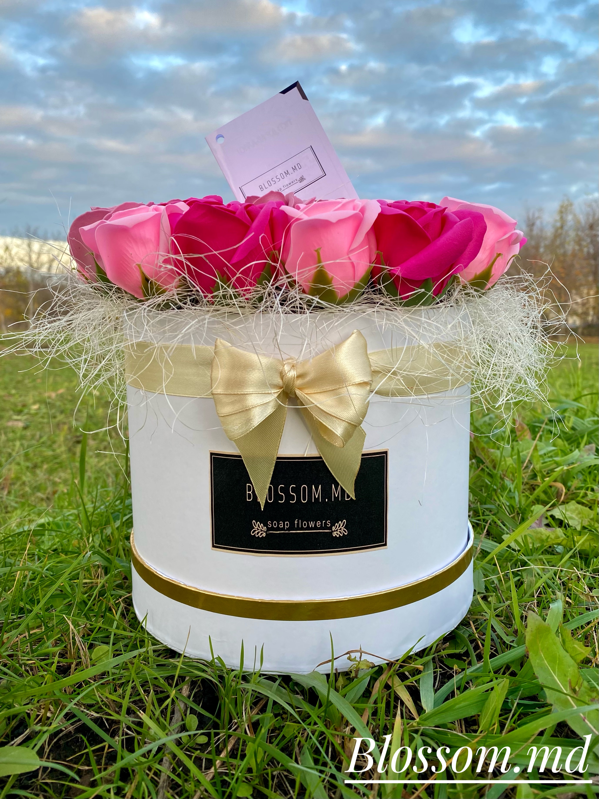
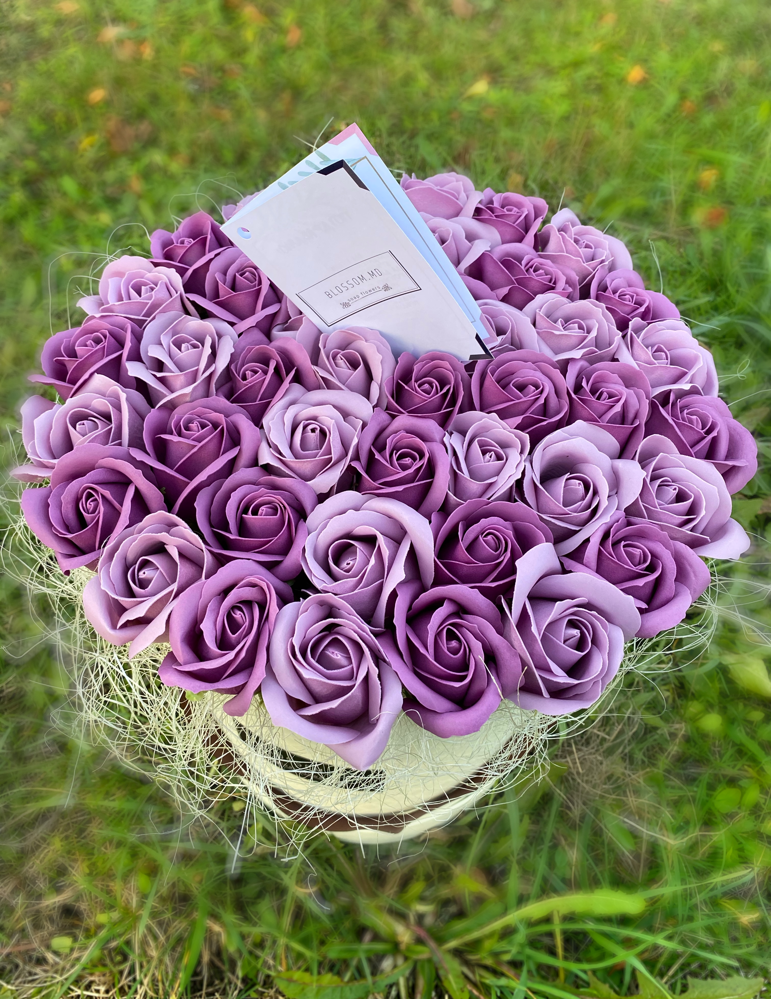

Цветы из мыла поразят вас своим ароматом и красотой
Мыльные цветы - это не просто букет из искусственных цветов или кусок мыла ,а нечто большее
каждый букет изготовлен из неувядших роз лепестки которых изготовлены из слепленного мыльного раствора.
предлагаем вам насладиться этим волшебным произведения мыльного искусства.

Происхождение
Мыльные букеты пришли к нам из Южной Кореи,
где они продаются повсеместно во флористических магазинах
и давно не являются новинкой или диковинкой.
В Корее производство мыльных роз поставлено на поток и приносит
владельцам многомиллионные заработки,
поскольку товар постепенно вымещает с рынка живые
цветы ввиду их недолговечности и сложности в уходе.

Из чего сделаны
Каждый цветок изготовлен вручную мыловаров фабрики,
мыло готовится на специальной формуле благодаря чему они не
вызывают раздражение или аллергию ,а также обладают приятным запахом.
Цветы создаются из специальной мыльной основе ,после чего проходит специальную
обработку что в конечном итоге позволит слепить красивый и реалистичный бутон.
Почему стоит нас выбрать
Цветы из мыла — необычный и красивый презент. Они яркие, изящные и симметричные. Приносят не только эстетическое удовольствие но и пользу.Кроме того, такие цветы не завянут. Если ими любоваться, а не использовать по назначению, их срок годности практически неограничен.